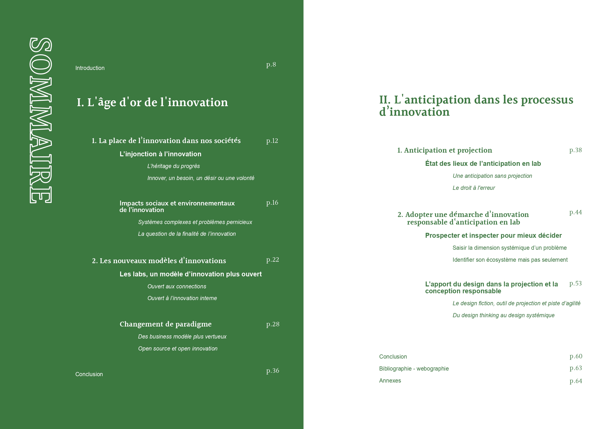
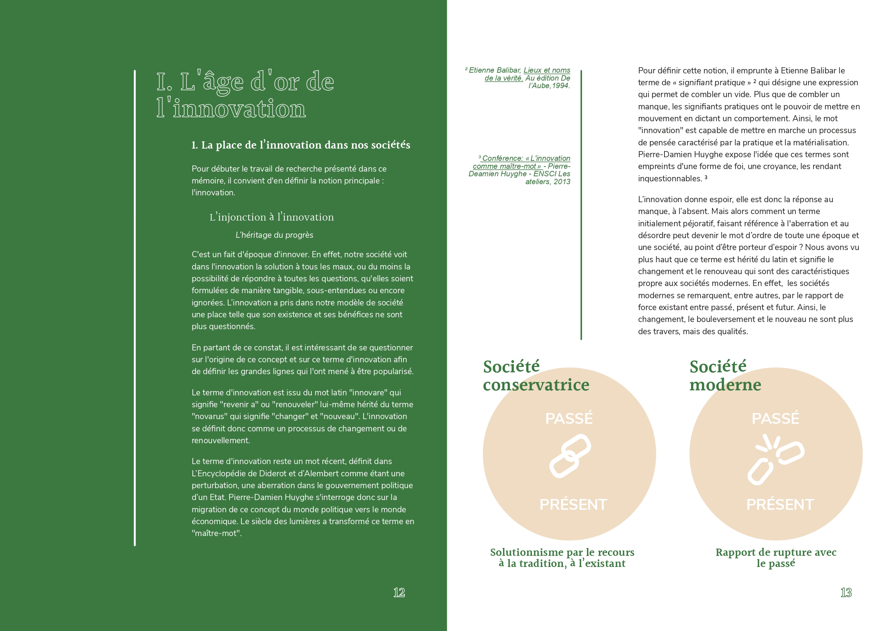
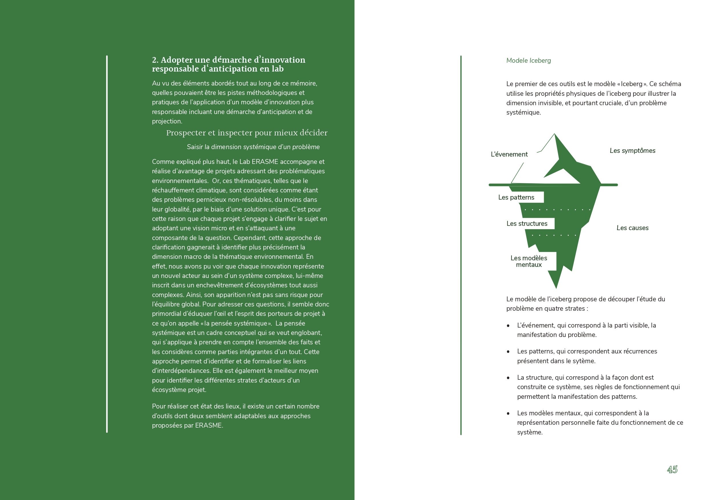
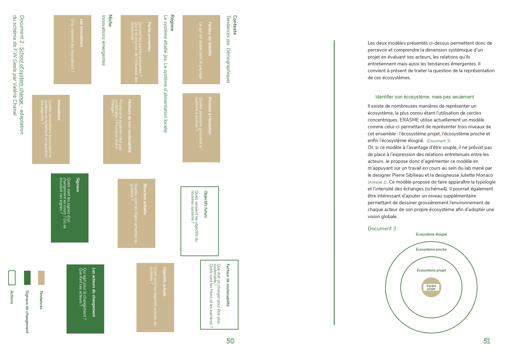

Innovation résponsable d'anticipation en Lab
Commanditaires : UGA Grenoble - IAE Grenoble
Écriture d'un mémoire de recherche portant sur les outils d'objectivation et de médiation dans la conception et l'accompagner des projets d'innovation dans un laboratoire d'innovation.
Résumé : À l’heure où il est devenu impossible de nier les grands enjeux écologiques, économiques, sociaux et politiques, ce texte cherche à questionner une nouvelle forme d’innovation, plus soucieuse et plus en phase avec ce qui nous attend demain : l’innovation responsable d’anticipation.
Face aux bouleversements que nous connaissons, nous serions tentés de répondre par l’innovation et la création de solution inédites, mais l’innovation telle que nous la pratiquons aujourd’hui est-elle la bonne approche ?
La démarche et les méthodologies proposées ici s’inscrivent dans le cadre d’une structure type laboratoire d’innovation publique, cherchant à accompagner les projets qu’il encadre avec sens face à l’avenir, en se souciant des impacts que sa pratique peut avoir.
2020-2021
Visiter le site ↗ Lire le mémoire↗


